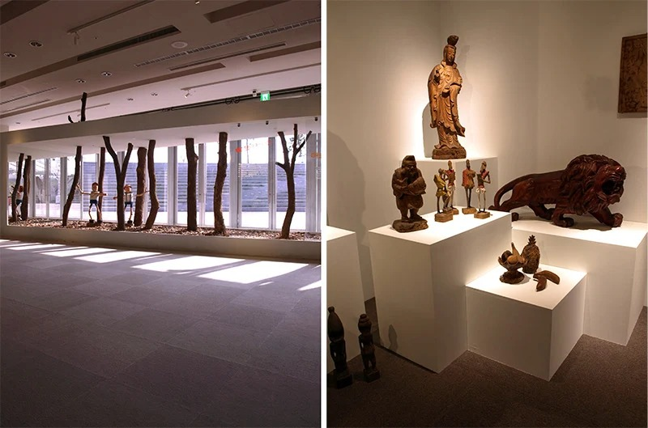
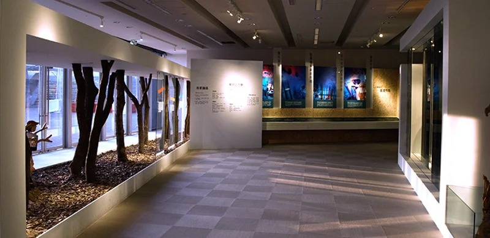
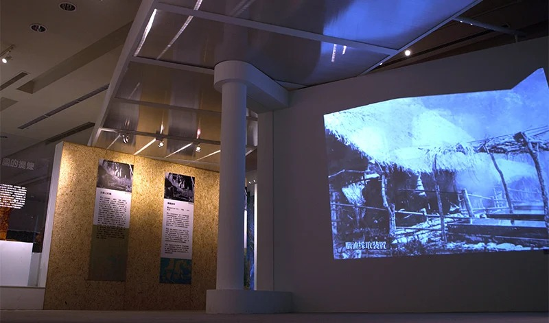

Enriching Hakka Settlements Camphor Industry Special Exhibition
Thirty Days, One Camphor Memory Hall
Thirty days. That's all the time there was between curatorial finalization and completion for the opening special exhibition of the Hakka Cultural Development Center's "Hidden Riches of the Hakka Villages" series, which took camphor as its subject. Taiwan once supplied 70 percent of the world's camphor; camphor, sugar, and tea were long called Taiwan's three treasures, and the Hakka villages of central and northern Taiwan formed the core production region.
The exhibition recreated the full chain of the industry, from harvesting and processing through to global trade, and extended into the transformation of Sanyi woodcarving, the Duck Box Treasure craft, and mask-based cultural creativity. We led the overall construction, turning academic research into something visitors could walk into, smell, and touch, on that thirty-day clock.
Why We Skipped Paint
Painting can only happen on site, and beyond slowing the schedule and generating dust that's hard to control, the smell would have competed with the camphor scent the whole exhibition was built around, leaving visitors smelling paint instead of camphor wood. So for the special-exhibit zone's partition system, we moved all the carpentry into factory-based modular prefabrication and left only assembly for the site, using laminate finishes across every surface instead of the traditional on-site spray-aging process. That took the most time-consuming, hardest-to-control, and most easily ruined step off site entirely.
The floor kept the museum's existing surface with a dark vinyl tile overlay defining the exhibition zone, and the accessible circulation width stayed at 120 centimeters or more throughout. At the entrance, a camphor sawdust scent basin paired with a low-speed, silent fan diffuser sends the camphor's volatile scent through the entire hall rather than just the doorway, so visitors are inside the smell before they've read a single panel.
Handling What a Century Left Behind
The artifact cases are museum-grade: solid-wood mortise-and-tenon bases with low-iron, low-reflection glass at over 91 percent transmittance, so glare doesn't get in the way of reading the objects. Passive humidity-control boxes inside manage the microclimate for organic artifacts like the Japanese-colonial-era ledgers and camphor crystals, materials that are damaged by both damp and dryness and need the humidity to settle on its own rather than being forced by outside control.
The exhibition shows real camphor wood at different processing stages, from raw cut blocks to the crushed feedstock used just before distillation, alongside actual Sanyi camphor-wood carvings and other craft pieces, tracing the material's path from raw wood to industrial technique to craft. Photographic panels lay out the full camphor-shed and distillation process, and a 1:10 scale model of a camphor-shed work scene compresses the division of labor across logging, gathering, and distillation into something visitors can take in at a glance.
Light, Held to a Standard
The zone runs on 3000K warm-white lighting, with track lights and 15-degree narrow-beam spotlights on the artifacts, illuminance held between 50 and 150 lux, the fixed range for paper-artifact preservation with no margin either way.
The camphor-tree feature zone is built from real camphor material sourced from a nearby camphor factory, showing the material from whole timber down to crushed feedstock, lit with wall-wash fixtures to create a dappled forest-light effect that makes the zone both a visual centerpiece and a working teaching aid on the processing chain. The timeline wall and the "Hakka Settlements and Camphor-Producing Regions" map use UV direct printing with an anti-glare film, and the interpretive panels use acid-free mounting with dimensional cut lettering, so nothing warps or discolors over a long run.
The whole schedule was built around the center's opening date, with night-shift work and zone-by-zone enclosed construction; display cases were pre-assembled at the factory and only brought in for final installation, which kept dust from reaching the museum's other permanent exhibits. A full round of illuminance, temperature-and-humidity, and emergency-evacuation testing was completed before the doors opened. Thirty days, and a museum-grade exhibition holding artifact preservation, industrial storytelling, and immersive experience together, all under a deadline that had already been announced to the public.
Have a project in mind?
Get in Touch



